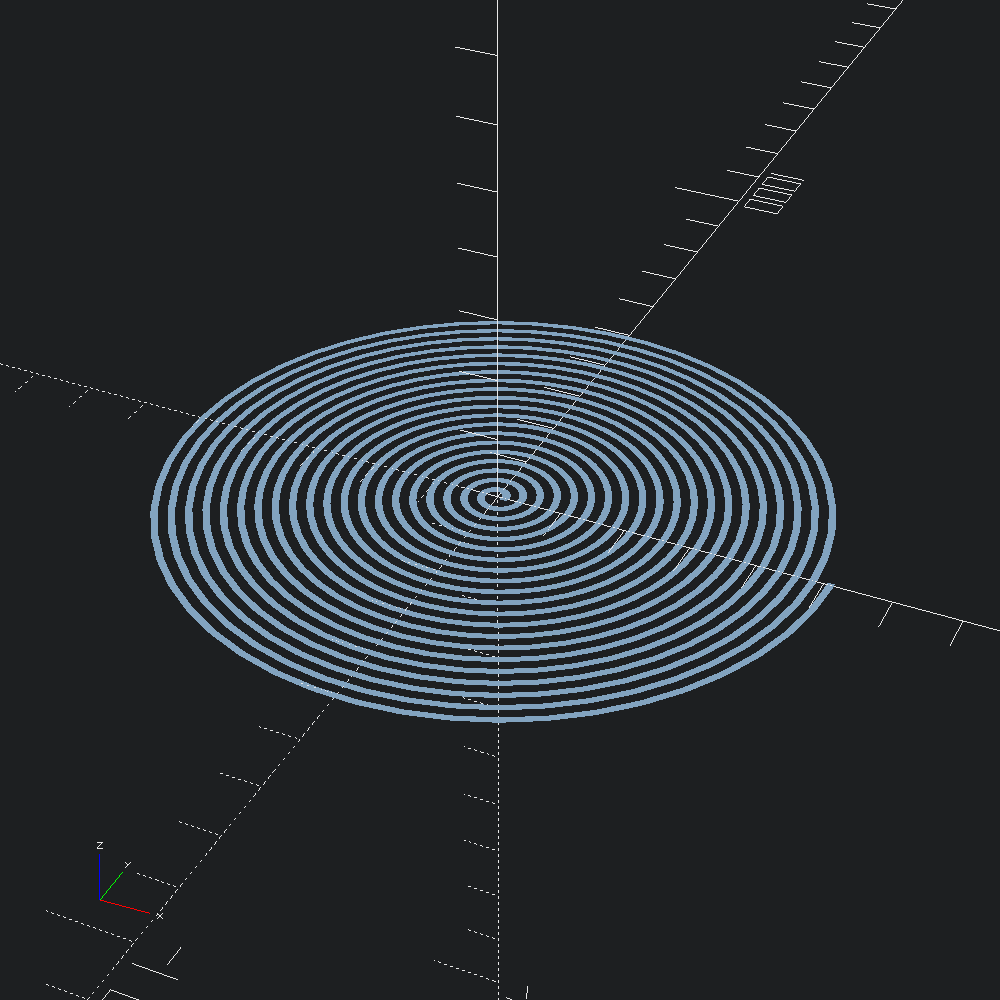
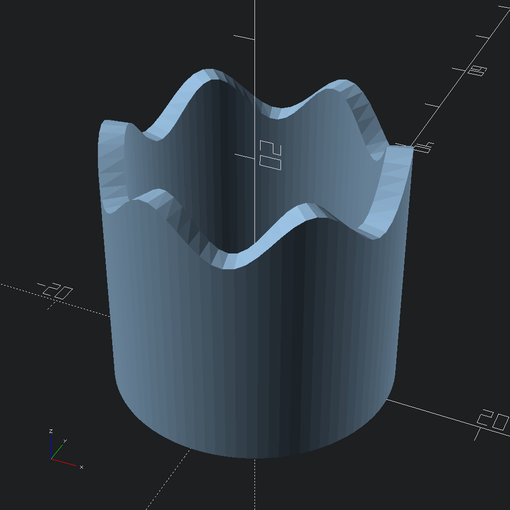

open OCADml
open OSCADmlSometimes one may need more control than what Path3.to_transforms (and by extension Mesh.path_extrude) provide. For instance, as demonstrated below with the wavey cylinder, when non-monotonic scaling throughout a sweep is desired. In those scenarios, generating/composing lists of Affine3.t by other means and giving those to Mesh.sweep is an option.
A plain, centred square with which to draw our spiral.
let square = Poly2.square ~center:true (v2 10. 10.)A series of affine transformation matrices describing a spiral.
let transforms =
let step = 0.001 in
let f i =
let t = Float.of_int i *. step in
Affine3.(
mul
(axis_rotate (v3 0. 0. 1.) (t *. Float.pi *. 40.))
(translate (v3 (10. +. (500. *. t)) 0. 0.)))
in
List.init (Int.of_float (1. /. step) + 1) fMesh.sweep applies each of the transforms to square in its original state, linking up each resulting loop of points with the next to form a mesh that we can convert into an OpenSCAD polyhedron.
let () = Scad.to_file "spiral.scad" @@ Scad.of_mesh @@ Mesh.sweep ~transforms square
let () =
let r = 10.
and h = 20.
and s = 2.
and step = 4.
and rad d = d *. Float.pi /. 180. in
let f i =
let t = Float.of_int i *. step in
Affine3.(
mul
(mul (rotate (v3 (rad 90.) 0. (rad t))) (translate (v3 r 0. 0.)))
(scale (v3 1. (h +. (s *. Float.sin (rad (t *. 6.)))) 1.)))
in
Mesh.sweep ~transforms:(List.init ((360 / 4) + 1) f) (Poly2.square (v2 2. 1.))
|> Scad.of_mesh
|> Scad.to_file "wave_cylinder.scad"